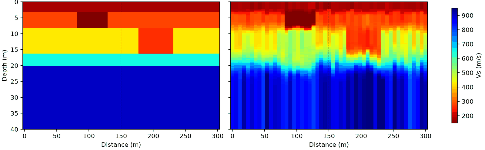
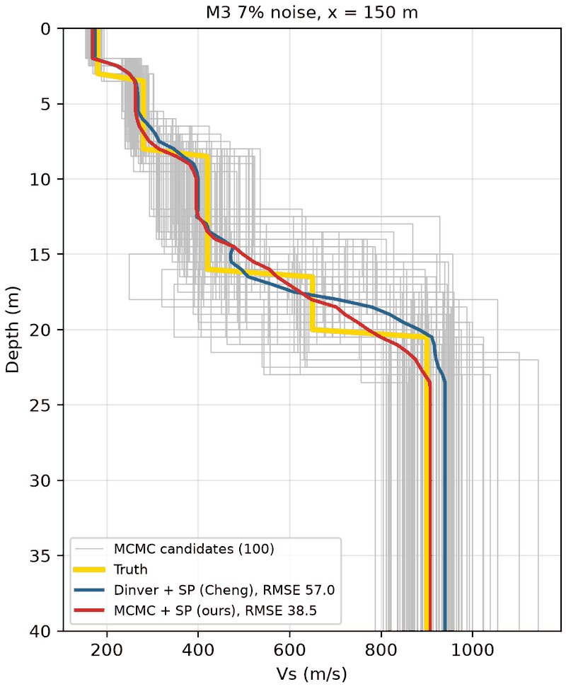

← All research
03 · Learn
Imaging with uncertainty
Near-surface velocity images that report how much to trust them.
The question
Surface-wave dispersion inversion is non-unique: many shear-wave velocity profiles fit the same data. Instead of keeping only the best-fitting model, can we combine a pool of plausible candidates along a 2-D line, and say how much each part of the image can be trusted?
Approach
Building on Cheng’s (2026) quasi-2-D spatial-posterior framework, I draw candidate models with MCMC, combine them by misfit-weighted averaging with spatial constraints between neighbouring points, and score the results for both accuracy and probabilistic calibration.

Findings so far

- In the baseline setting, misfit-weighted averaging of candidates accounts for more than 98% of the improvement over picking the single best-fitting model.
- Coupling neighbouring points adds little in that setting.
- Next: conditional generative models to make the candidate pool more diverse while needing fewer forward evaluations.